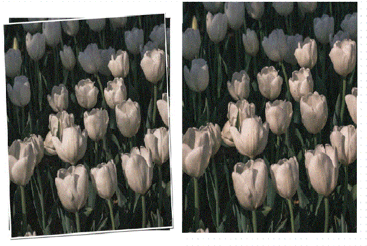

งานเทคนิคที่ 1 การนำวัตถุออกจากฉากหลัง (Magic Wand Tool)
1. หารูปภาพสีบุคคล
2. หารูปภาพสีวิวธรรมชาติ
3. นำรูปบุคคลในรูปภาพที่ 1 มาใส่ในรูปภาพที่ 2 4. ส่งงานเป็นไฟล์ภาพ 1 ไฟล์ ซึ่งประกอบด้วยรูปภาพที่ 1 (รูปภาพสีบุคคล) รูปภาพที่ 2 (รูปภาพสีวิวธรรมชาติ) และรูปภาพที่ 3 (รูปภาพสีบุคคลบนรูปภาพสีวิวธรรมชาติ)

งานเทคนิคที่ 2 การย้ายวัตถุไปยังฉากหลังอื่น ๆ (Quick Selection Tool)
1. หารูปภาพสีบุคคลที่มีฉากหลัง
2. หารูปภาพสีวิวธรรมชาติ
3. นำรูปบุคคลในรูปภาพที่ 1 มาใส่ในรูปภาพที่ 2 4. ส่งงานเป็นไฟล์ภาพ 1 ไฟล์ ซึ่งประกอบด้วยรูปภาพที่ 1 (รูปภาพสีบุคคลที่มีฉากหลัง) รูปภาพที่ 2 (รูปภาพสีวิวธรรมชาติ) และรูปภาพที่ 3 (รูปภาพสีบุคคลบนรูปภาพสีวิวธรรมชาติ)
งานเทคนิคที่ 3 การกำจัดตาแดงบนภาพถ่าย (Red Eye Tool)
1. หารูปภาพสีบุคคลที่มีตาแดง
2. กำจัดตาแดงบนภาพถ่าย
3. ส่งงานเป็นไฟล์ภาพ 1 ไฟล์ ซึ่งประกอบด้วยรูปภาพ ที่ 1 (รูปภาพสีบุคคลที่มีตาแดง) และรูปภาพที่ 2 (รูปภาพสีบุคคลที่กำจัดตาแดง)